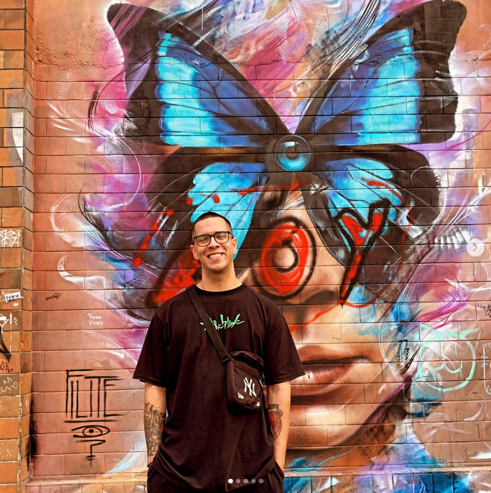
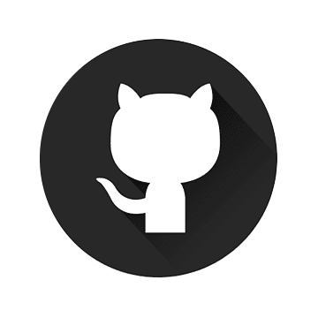

Olá! Meu nome é Willian, sou estudante de Engenharia de Software e estou em constante evolução na carreira de desenvolvimento Full-Stack. Atualmente, tenho experiência em projetos acadêmicos, particulares e estou começando a desenvolver soluções para pequenos negócios, com o objetivo de aprimorar minhas habilidades técnicas e entender melhor as demandas do mercado real. Meu foco é criar soluções que unam boa lógica de programação, usabilidade e performance, sempre buscando aprender novas tecnologias e boas práticas de desenvolvimento. Sigo em busca de novos desafios que me permitam crescer tanto no Front-end quanto no Back-end.
Descrição do projeto 1...
Descrição do projeto 2...
Descrição do projeto 3...
